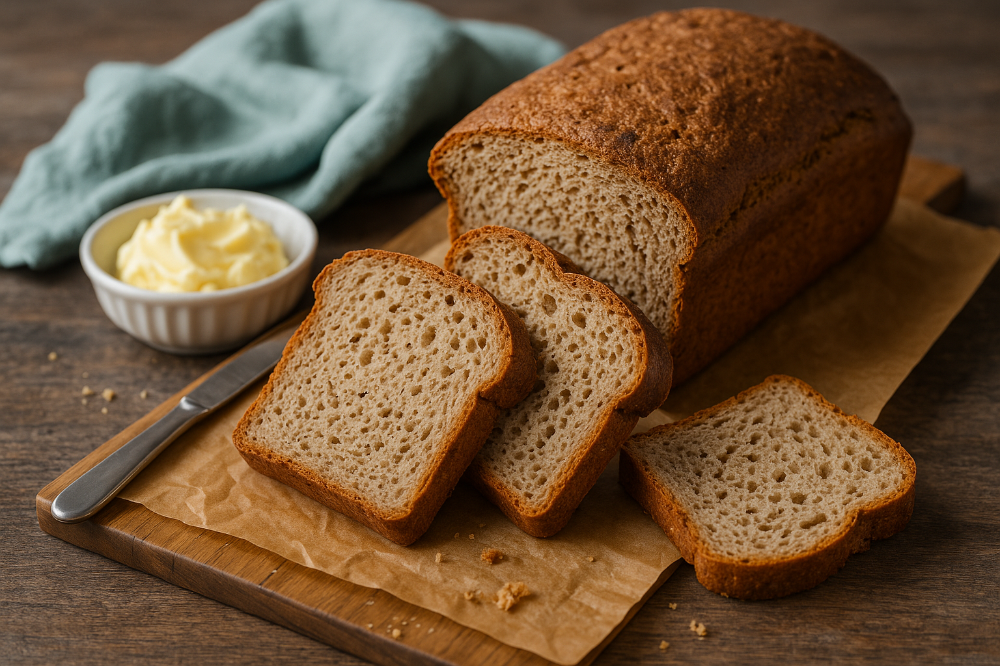
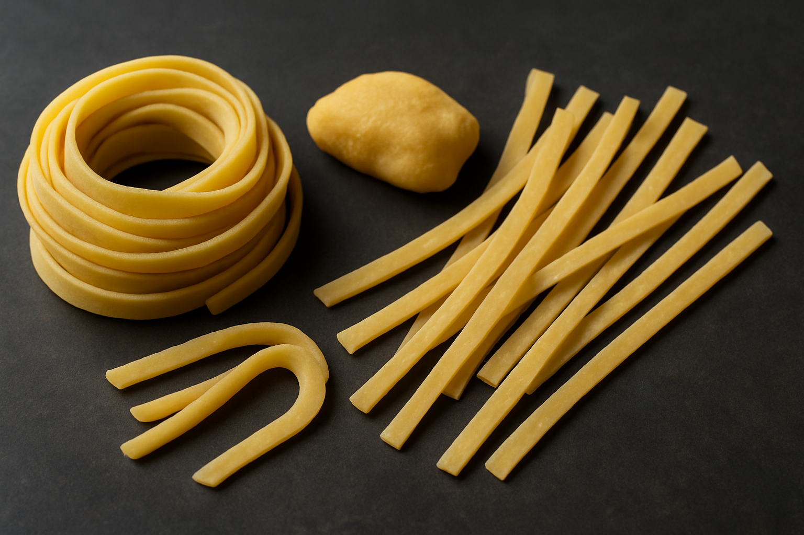
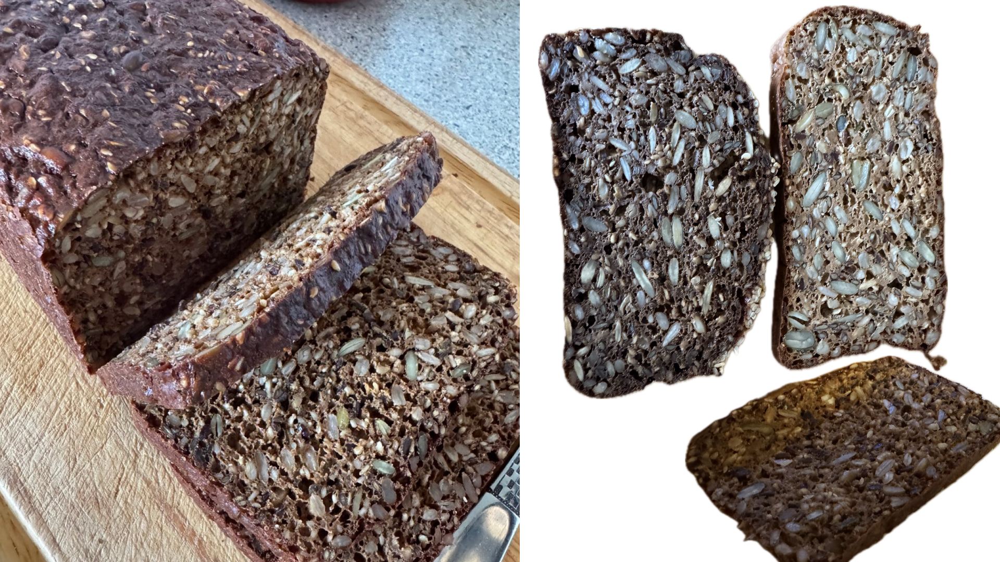
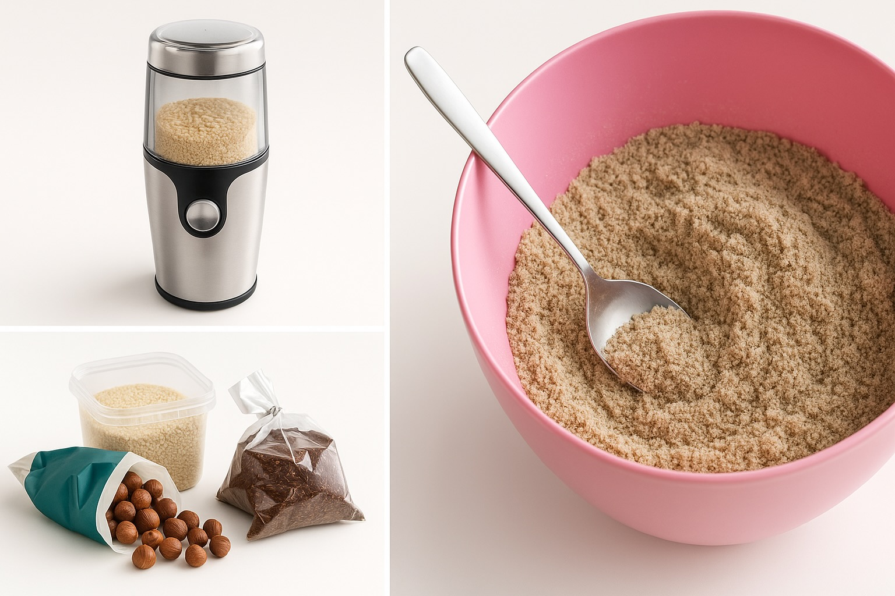

Velkommen til Keto Opskrifter
Din guide til lækre og sunde keto-venlige måltider
Seneste Opskrifter

Keto Franskbrød med Kerner
27. April 2025
Et luftigt og saftigt keto-venligt franskbrød bagt i form, lavet på mandelmel, solsikkekerner, græskarkerner og hørfrø.
Læs opskrift →

Keto Pasta (frisk og frysbar)
27. April 2025
En velsmagende, lavkulhydrat pasta, som du kan lave selv – perfekt til keto. Kan nydes med det samme eller fryses ned.
Læs opskrift →

Keto-venligt Rugbrød
27. April 2025
Et saftigt og mættende keto-venligt rugbrød med masser af kerner og frø.
Læs opskrift →Seneste Blog Indlæg

Gør din kaffe blødere med æggeskaller – perfekt til keto!
27. April 2025
Lær hvordan du kan bruge rene æggeskaller til at reducere syrligheden i din kaffe og få en blødere smag – en smart måde at udnytte alle dele af ægget på keto.
Læs mere →

Lav dit eget keto-venlige mel
27. April 2025
Lær at lave dine egne sunde melalternativer med kerner og nødder - perfekt til keto og low-carb bagning.
Læs mere →